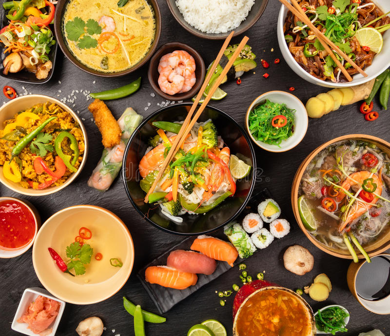
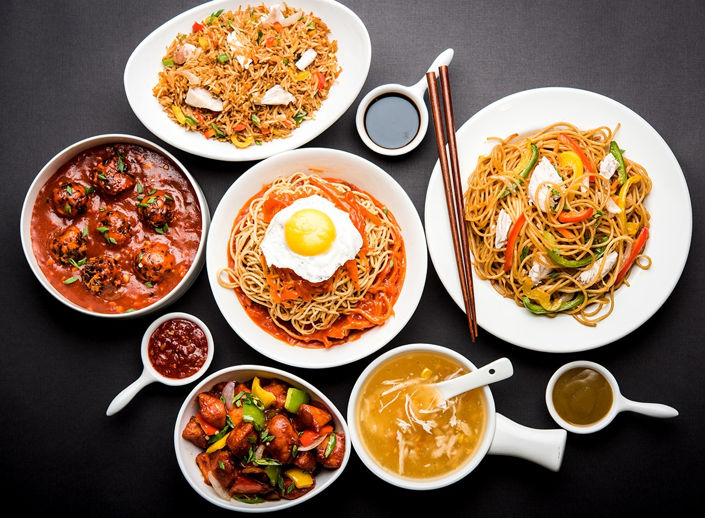
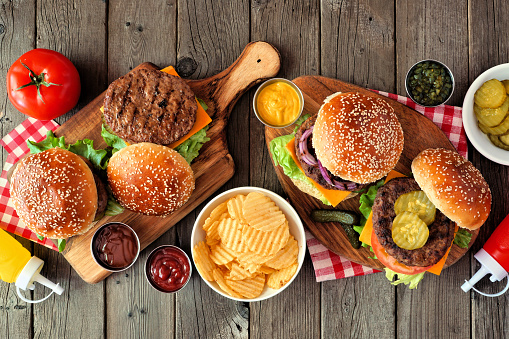

Taste The Best
Simple recipes made for real, actual, everyday life.
 |
Indian cuisine consists of a variety of regional and traditional cuisines native to India. Given the diversity in soil, climate, culture, ethnic groups, and occupations, these cuisines vary substantially and use locally available spices, herbs, vegetables, and fruits. Read more... |
|
Italian cuisine is a Mediterranean cuisine consisting of the ingredients, recipes and cooking techniques developed across the Italian Peninsula since antiquity, and later spread around the world together with waves of Italian diaspora. Read more... |
 |
|  |
Chinese food, rich and colorful, has diversified color, aromatic flavor, and excellent taste as its main features. With these three characteristics, it is not only tasty but also a work of art for people to appreciate. Read more... |
|
American cuisine developed as home cooking rather than haute cuisine. Typical foods include a large variety of beef, pork and chicken dishes, baked beans, barbecue, and clam chowder, not to mention the American-style candy bars and fast-food items that have been exported globally. Read more... |
 |